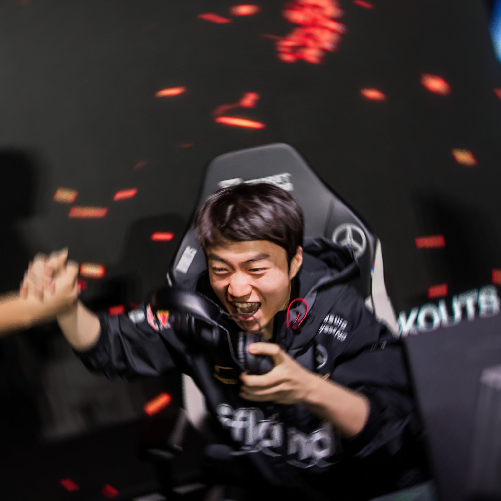
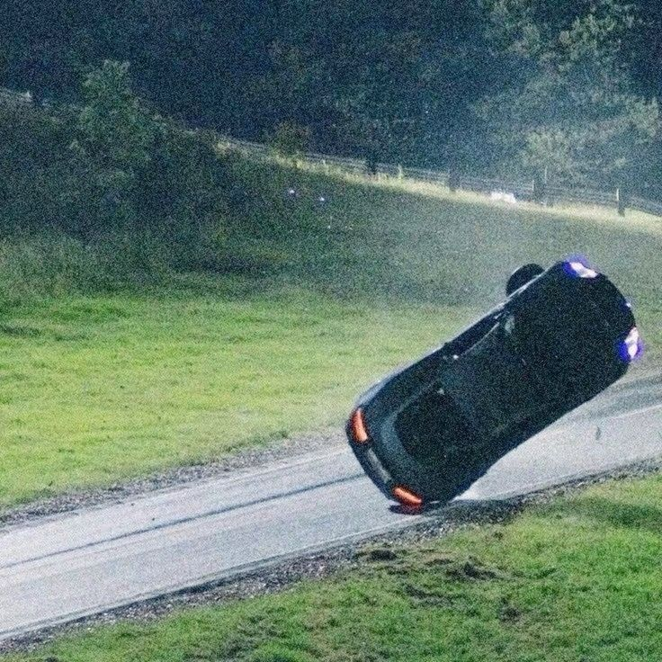

Musics
Top 4 Playlist

J
A playlist I made, inspired by my love for a special girl in my heart.

daily routine
This has become my daily driver whenever I'm doing activities or going out of the house. It features tracks from Ravyn Lenae, Sombr, Conan Gray, Daniel Caesar, Nikki, Harry Styles, and other artists.

Lacrimae Rerum
This playlist reminds me of all the saddest and most hopeless days I survived.

bagengeng
This is the most recent playlist I've made, born from a sudden love for this type of music. It features a variety of Filipino artists.